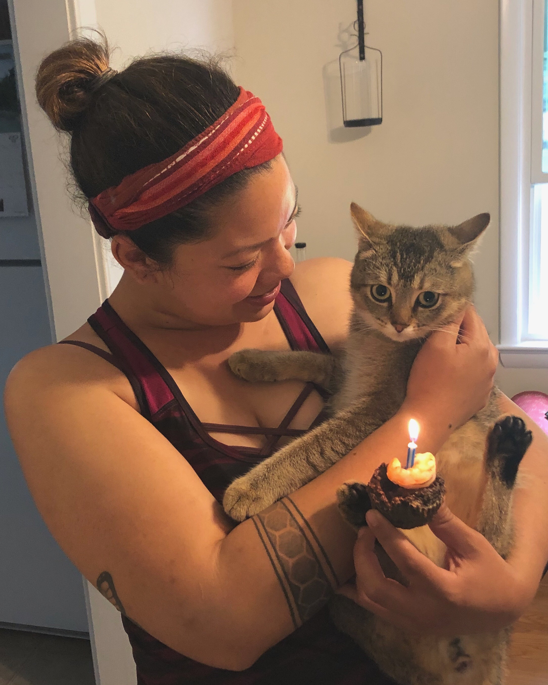

Profile: Allison Pereira

About Me:
- I was born in Silver Spring, Maryland
- I currently live in Mount Vernon, Washington
- I have a cat named Sunny :)
- Being a vegetable farmer was one of the best jobs I had. Free veggies!!

Here is a picture of my little boy!
Interests:
- I enjoy gardening
- I enjoy hiking, camping, and biking.
- I enjoy eating ice cream!
Camping Sunsrise Video at Joshua Tree: